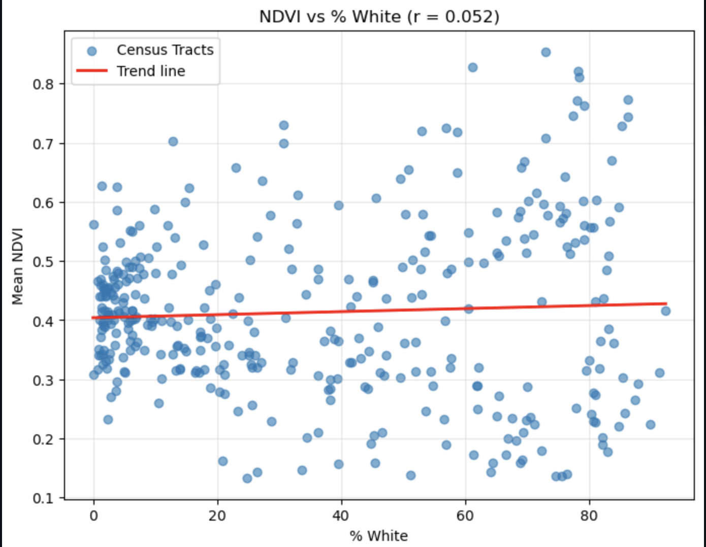
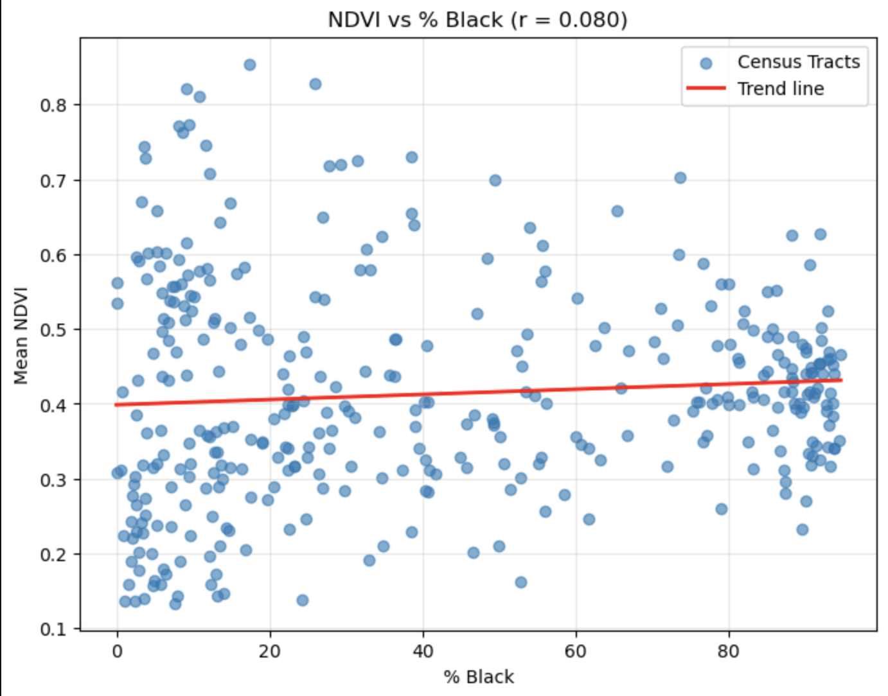
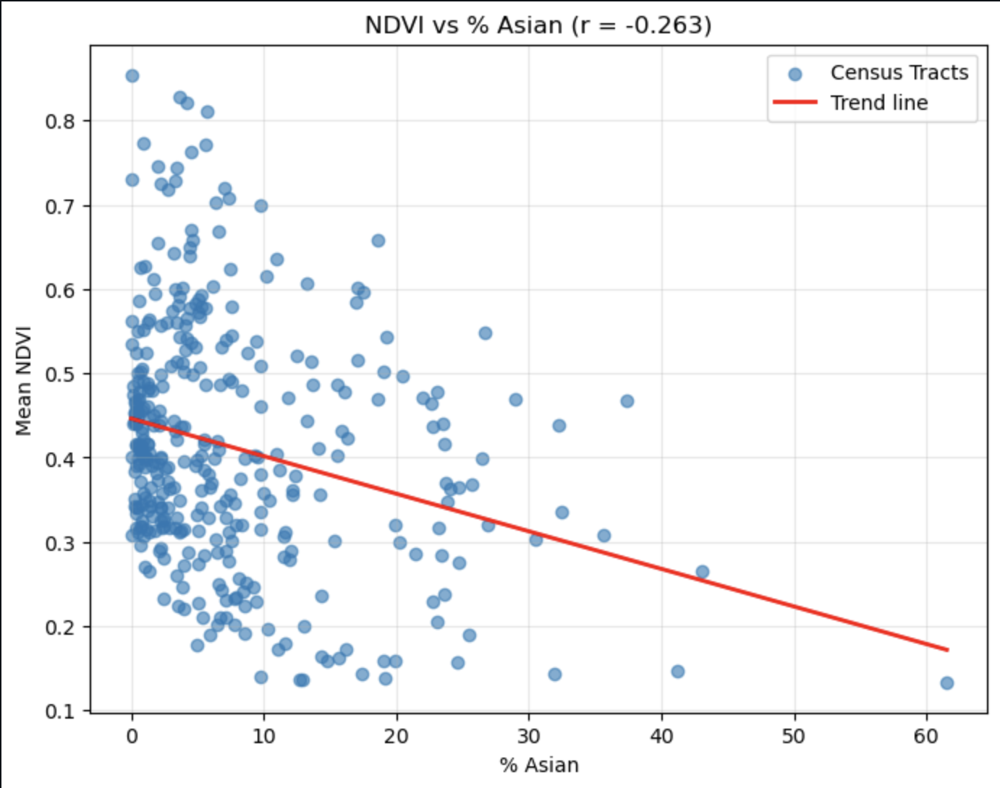
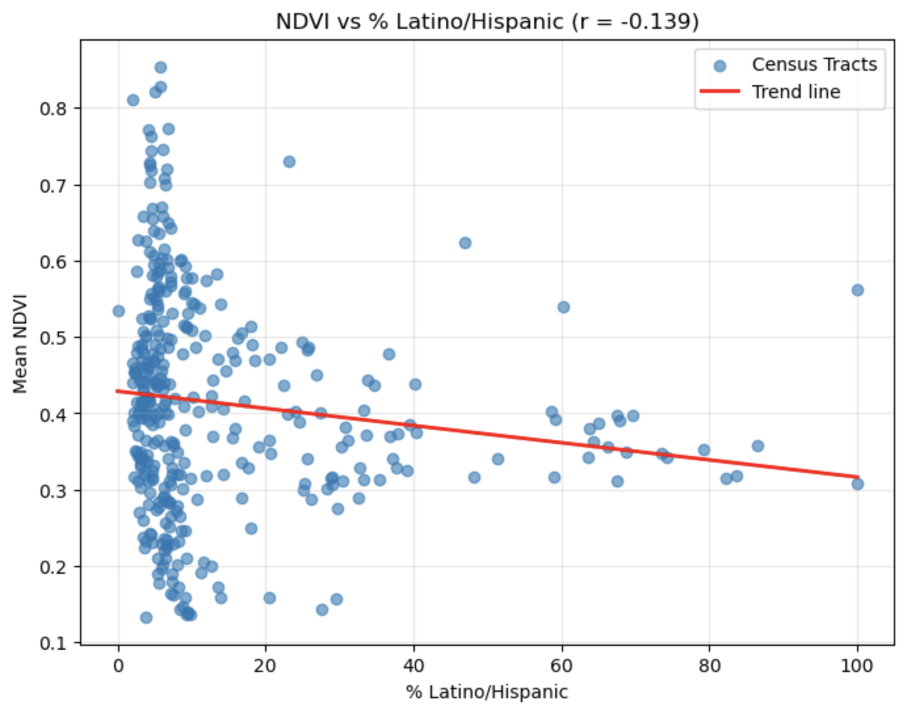
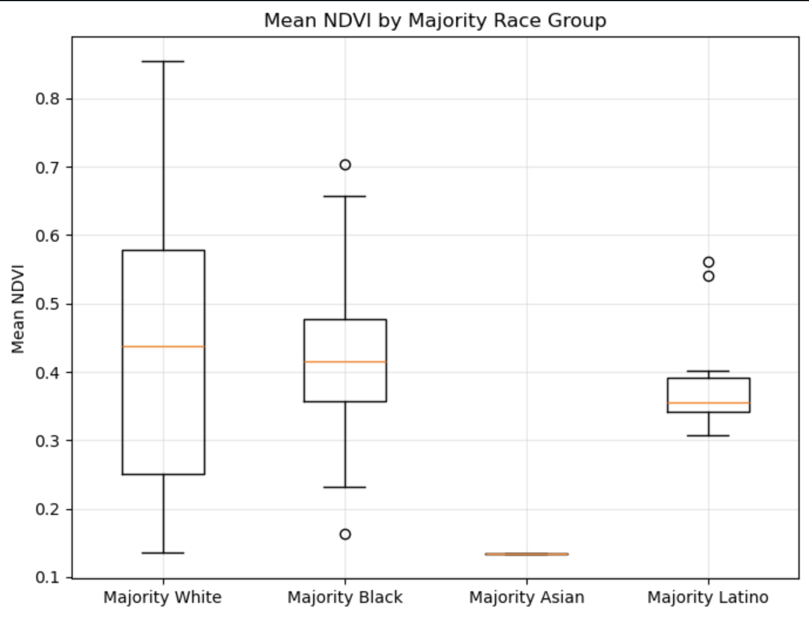

Charlie Salvatore Wrede
Hello! This is my Portfolio!
Education
BA in Geography, certificate in GIS and Computational Science (expected May 2026).
Professional
GIS Intern at Tallgrass Energy (Summer 2025)
Biography
Hello! My name is Charlie and I am passionate about GIS and Computer Science, specifically GIS development and data science. I am hoping to continue to learn more about Computer Science as I progress as a student and I hope to get a minor or Masters in Computer Science. I would like to work within either the tech or environmental field because I am motivated to solve challenging and fulfilling problems that will help me to become a better programmer.
What is GIS?
Here’s a video showing what GIS is: Watch Video
Here's a Photo of Me!

Projects
Mapping Assignment in Python
Here’s a map I made in Python of my favorite vacation spot in Sicily (Brucoli):
NDVI & Race Inequality Analysis in Philadelphia (2020 Census + MODIS NDVI)
This project analyzes vegetation greenness (NDVI) across all census tracts in Philadelphia and compares it to racial demographics using 2020 U.S. Census data. Satellite NDVI values were computed using three 2021 MODIS scenes and averaged to produce a mean NDVI for each tract.
The goal of this analysis was to explore whether majority White, Black, Latino, or Asian neighborhoods in Philadelphia experience different levels of vegetation cover.
Methodology
This project integrates satellite-derived vegetation data (NDVI) with 2020 U.S. Census racial demographics to explore possible environmental inequalities across Philadelphia neighborhoods.
- Census Tract Geometry: Loaded 2010 census tract boundaries for Philadelphia County from OpenDataPhilly.
- Demographic Data: Used 2020 Census PL 94-171 racial data via the U.S. Census API. The data contained counts for White, Black, Asian, and Hispanic/Latino residents. I converted all the counts to percentages.
- MODIS NDVI Processing: Loaded multiple 2023 MOD13Q1 NDVI scenes using rioxarray. Applied MODIS scaling factors and filtered out invalid pixels. Computed a mean NDVI raster across all dates.
- Zonal Statistics: For each census tract, I clipped the NDVI raster and calculated mean NDVI.
- Correlation Analysis: Produced scatterplots comparing NDVI to each racial group's proportional population share.
- Majority-Group Analysis: Identified majority-White, majority-Black, majority-Asian, and majority-Latino tracts and compared their vegetation levels via a boxplot.
- Bivariate Choropleth Maps: Created four maps combining NDVI and racial percentages using a 3×3 color matrix. Each map visualizes joint patterns of vegetation (Low–High) and racial concentration (Low–High):
NDVI vs % White Population
NDVI vs % Black Population
NDVI vs % Asian Population
NDVI vs % Latino Population
Mean NDVI by Majority Race Group
Bivariate Maps: Race Composition and NDVI in Philadelphia
Asian Population % vs NDVI
.png)
Black Population % vs NDVI
.png)
Latino/Hispanic Population % vs NDVI
.png)
White Population % vs NDVI
.png)
Summary: NDVI values generally ranged from 0.25–0.55 across Philadelphia, which is typical for an urban/suburban environment. Across racial groups, the differences in NDVI for White and Black populations were small and correlations were close to zero, suggesting no strong relationship between racial composition and vegetation greenness at the census tract scale. Asian and Latino populations however did show negative correlation. This shows that there is less greenness and general vegatation in these communities and this should be considered as a characteristic of Environmental Justice.
The boxplot comparing majority White, majority Black, majority Latino, and majority Asian neighborhoods shows little variation between White and Black neighborhoods and some with Latino and a lot with Asian communities. The Latino and Asian correlations do seem to be largely true as historically Latino and Asian nieghborhoods are generally in urban areas with little greenery. However Black and White populations show no correlation. I did find this interesting. Upon making the maps, I realized the main reason is due to a large white population in South Philadelphia, this area is quite urban with a low NDVI and is known for it's large Italian and Irish American populations. I also noticed that in North West and West Philadelphia there are large areas with a majority black population and high NDVI values. I also did some research and found that there are many greenspace initiatives for black and brown communities in Philadelphia and I wonder if the positive correlation for black communities is in part due to these initiatives like this one done by Penn: https://communityimpact.pennmedicine.org/greening-for-health-equity-in-black-and-brown-communities/ While for majority Asian and Latino nighborhoods theres not many neighborhoods with high NDVI values and I think these green space initiatives should also try to push for more greenspace initiatives in these communities too, based upon my analysis.